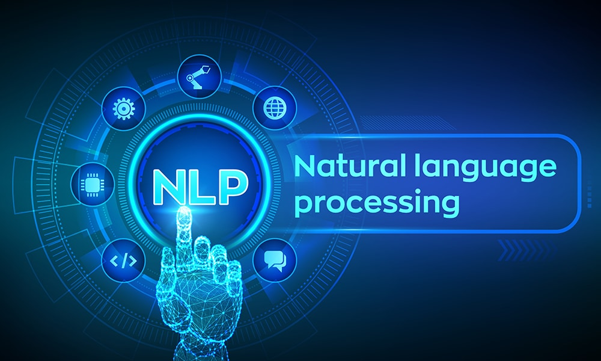
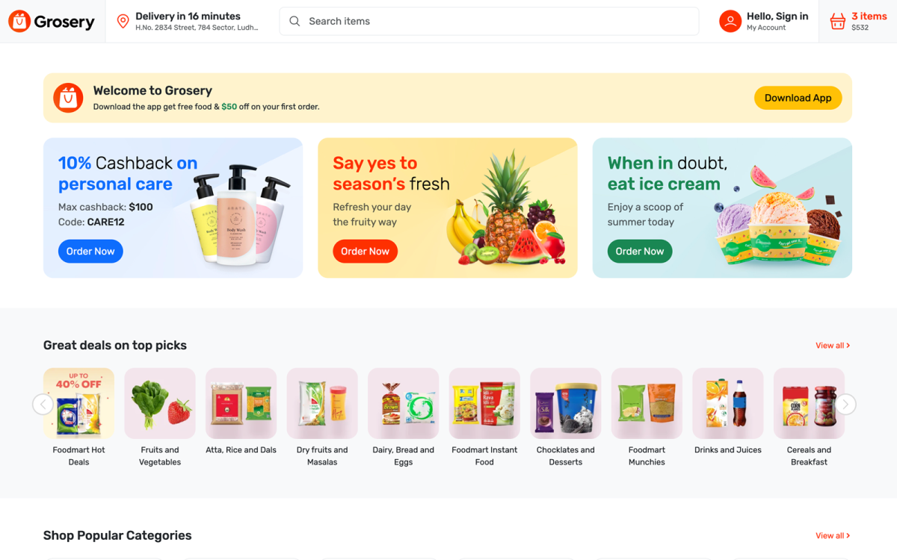

Projects

Lemmatization & Stemming Model for Indian Languages
Implemented rule-based and neural techniques for NLP tasks across 5 Indic languages. Used Python, TensorFlow, and NLTK for morphological tagging, inflection generation, and evaluation.

Loan Eligibility Prediction Model
Developed a model using logistic regression, decision trees, random forest, and gradient boosting. Achieved high accuracy (F1-score: 0.86) and suggested future improvements using deep learning.
Library Management System
Built during training at Board Infinity. Developed secure login, account creation, and book database management using C++ with Object-Oriented Design and DSA techniques.

Grocery Website
Collaborated on a responsive front-end grocery platform using HTML, CSS, and JavaScript. Ensured smooth UI/UX for browsing and purchasing groceries online.